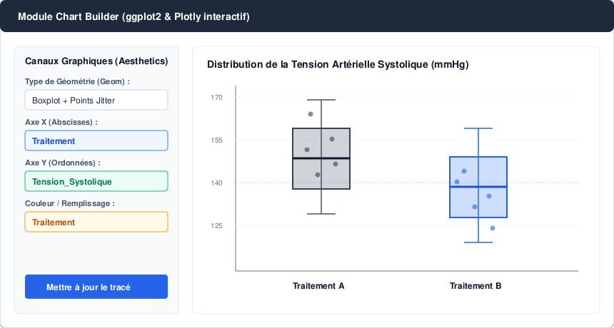

Tutoriel pratique : de l'importation au rapport
Un parcours reproductible basé sur iris, le jeu de données fourni par R.
Objectif
Ce tutoriel montre le flux de travail réellement implémenté : charger ou importer des données, explorer les variables, produire des statistiques descriptives, visualiser les distributions, exécuter un test et conserver le code dans le Journal R Markdown.

1. Démarrer avec iris
Ramses démarre avec le jeu de données iris. Lancez :
library(Ramses)
run_app()Vous pouvez aussi importer votre propre fichier depuis l'onglet Données.
2. Explorer les données
Dans l'espace Données, observez le tableau interactif : recherche, pagination, tri et indicateurs de dimensions. Pour un premier exercice, utilisez Sepal.Length, Sepal.Width, Petal.Length, Petal.Width et Species.

3. Décrire une variable quantitative
Ouvrez Analyses Descriptives → Variables Quantitatives. Sélectionnez Sepal.Length. Vous pouvez demander N, NA, moyenne, médiane, variance, écart-type, CV, minimum, maximum, IQR, asymétrie et aplatissement.
Ajoutez Species comme variable de groupe pour comparer la distribution descriptive entre espèces. Le tableau et le graphique sont mis à jour à partir du jeu de données actif.
4. Décrire une variable qualitative
Dans Variables Qualitatives, sélectionnez Species. Ramses affiche les effectifs, les pourcentages et les pourcentages cumulés. Vous pouvez inclure les valeurs manquantes et modifier l'ordre des modalités.
5. Étudier deux variables
Dans Tableau Croisé, choisissez deux variables catégorielles. Pour Species, vous pouvez par exemple utiliser une variable catégorielle créée dans votre propre fichier.
Dans Matrice de Corrélation, sélectionnez au moins deux variables numériques et choisissez Pearson ou Spearman. Le traitement des valeurs manquantes peut être configuré.
6. Construire un graphique
Le Chart Builder permet de choisir huit géométries et de mapper les variables sur X, Y, couleur/remplissage, taille et facettes.
Nuage de points
Essayez X = Sepal.Length et Y = Petal.Length, avec Species en couleur.
Boxplot
Essayez X = Species et Y = Petal.Length.

7. Exécuter un test
Dans Tests Statistiques, Ramses propose notamment les tests t, Wilcoxon, ANOVA à un facteur, Kruskal-Wallis, Chi-deux, Fisher, McNemar et les tests de corrélation.
Avant de choisir un test, utilisez la section Normalité & Variances pour examiner les conditions pertinentes. L'interface affiche une décision selon le seuil alpha choisi, mais cette décision doit toujours être interprétée avec le contexte de l'étude et les hypothèses du modèle.
8. Régression
Le volet Modélisation permet d'ajuster une régression linéaire ou une régression logistique binaire. Les coefficients, leur incertitude et plusieurs indicateurs de qualité sont présentés, avec des graphiques diagnostiques.
La version 0.1.0 reste une base pédagogique. Vérifiez les hypothèses, la qualité des données, le codage de la réponse et la pertinence du modèle avant toute conclusion scientifique.
9. Conserver l'analyse
Chaque action d'analyse peut être ajoutée au Journal R Markdown. Vous pouvez y ajouter vos propres notes en Markdown puis exporter :
- un script
.R; - un document source
.Rmd; - un rapport
.html.

10. La bonne démarche
- Comprendre la question statistique.
- Identifier le type des variables.
- Examiner les données et les valeurs manquantes.
- Choisir la méthode adaptée.
- Vérifier les conditions d'application.
- Interpréter l'estimation, l'incertitude et la p-value.
- Conserver le code et les décisions dans le rapport.
Cette logique correspond à la philosophie du projet : l'interface doit aider à analyser, pas remplacer le raisonnement statistique.